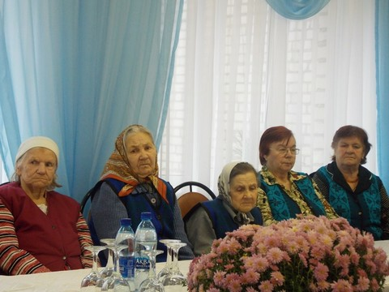
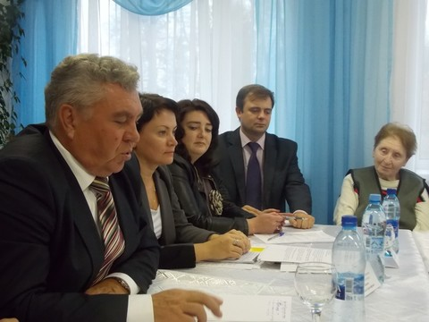
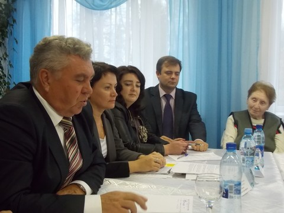

Заседание круглого стола «Разные возможности - равные права»
16 октября 2013 в г.Тарусе состоялось заседание «круглого стола», организованное территориальной избирательной комиссией Тарусского района в рамках проекта «Разные возможности - равные права».
Цель встречи - определение задач и способов их решения в работе избирательных комиссий всех уровней по обеспечению максимально удобных условий гражданам Российской Федерации, являющимися инвалидами, для реализации их активного избирательного права.


Модератором мероприятия стала председатель ТИК Тарусского района Войнова Н.В. В обсуждении приняли участие председатель Избирательной комиссии Калужской области Квасов В.Х., глава администрации МР «Тарусский район» Мальцев Е.М., директор ГСУ СО «Тарусский дом-интернат для престарелых и инвалидов» Стародубцева Л.Е., заведующая отделом социальной защиты населения администрации МР «Тарусский район» Светочева Л.А., которая является членом Тарусского районного отделения Калужской областной организации «Всероссийское общество инвалидов», а также председатель участковой избирательной комиссии № 2410 Бычкова Л.Л. и избиратели, проживающие на территории «Тарусского дома-интерната для престарелых и инвалидов».
Каждый из присутствующих смог высказать свою точку зрения по вопросу выявления проблем и существующих на сегодняшний день недостатков в обеспечении необходимых условий для осуществления гражданами с ограниченными физическими возможностями своих избирательных прав.
Перед началом обсуждения участникам «круглого стола» был показан фильм «Имею право. Обеспечение избирательных прав граждан, являющихся инвалидами», подготовленный ЦИК России совместно с Российским центром обучения избирательным технологиям при ЦИК России.
В процессе обсуждения остро встал вопрос о создания базы данных избирателей, являющихся инвалидами, с целью выявления у них желания отдать свой голос вне помещения для голосования либо в помещении для голосования на избирательном участке. Было отмечено, что для дальнейшей работы необходима информация не только по категориям инвалидности (слепые и слабовидящие, глухие и слабослышащие, с нарушением функций опорно-двигательного аппарата), но и с указанием Ф.И.О. и места фактического проживания избирателей, являющихся инвалидами.
В этом вопросе была достигнута договоренность о взаимодействии между Территориальной избирательной комиссией Тарусского района и отделом социальной защиты населения администрации МР «Тарусский район».

 

В ходе обсуждения определился ряд первоочередных задач, которые заключаются в тщательном учете избирателей, имеющих инвалидность, и тесном взаимодействии с ними; в оперативной обработке полученной информации и использовании всех возможных ресурсов для реализации избирательных прав граждан этой категории.
Было решено при дальнейшей организации обучения членов участковых избирательных комиссий и резерва составов участковых избирательных комиссий предусмотреть специальные темы, связанные с особенностями подготовки ко дню голосования и организацией голосования избирателей, являющихся инвалидами, а также использовать в обучении показанный участникам «круглого стола» фильм «Имею право. Обеспечение избирательных прав граждан, являющихся инвалидами». Акцент сделан на привлечении к обучению представителей общественных организаций инвалидов и учёте их рекомендаций.
Подведение итогов провёл председатель Избирательной комиссии Калужской области Квасов В.Х., в своём заключительном слове он отметил, что в целом работа по обеспечению избирательных прав граждан с ограниченными физическими возможностями должна носить комплексный характер.


{kind=link}
{kind=link}
{kind=link}